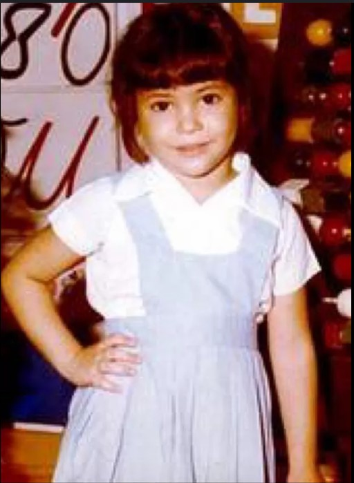

Nació el 2 de febrero de 1977 en Barranquilla, Colombia. Es hija de William Mebarak Chadid, un estadounidense, nacido en Nueva York; de origen libanés y de Nidia del Carmen Ripoll Torrado. Shakira (شاكرة šākira) significa «agradecida» en árabe. Cuando tenía cuatro años, su padre la llevó a un restaurante local de Oriente Medio, donde por primera vez escuchó el derbake, un tambor tradicional usado en la música árabe, acompañamiento típico de la danza del vientre. Antes de darse cuenta, ya estaba bailando sobre una mesa, y los clientes del restaurante aplaudieron con entusiasmo. Fue entonces cuando supo que quería ser artista. Le gustaba cantar para sus compañeros y profesores en su escuela católica, pero en segundo grado no fue aceptada en el coro de la escuela porque su vibrato era demasiado fuerte. A la edad de ocho años, su padre se declaró en bancarrota, y mientras se ultimaban los detalles del proceso, fue a vivir con unos familiares a Los Ángeles.
Entre los diez y trece años de edad Shakira fue invitada a varios eventos en Barranquilla y obtuvo cierto reconocimiento en la zona. Como consecuencia de ello, conoció a un ejecutivo de Sony Colombia, quien tras una prueba decidió promover a la cantante en su productora. Shakira se trasladó a Bogotá y con catorce años de edad lanzó su primer álbum en 1991, titulado Magia, el cual incluye canciones escritas por ella misma, entre las que se destacan «Magia», «Esta noche voy contigo» y «Tus gafas oscuras». Sin embargo, el álbum resultó ser un fracaso comercial, vendiendo solamente mil unidades. En 1993, a días de haber cumplido los dieciséis años, participó en el XXXIV Festival Internacional de la Canción de Viña del Mar, donde obtuvo el tercer lugar de la competencia con la canción «Eres». Despegando asi su carrera Internacional.
A lo largo de su carrera, Shakira ha ganado múltiples premios Grammy y ha vendido millones de discos en
todo el mundo. Es conocida por su estilo único que fusiona pop, rock, y ritmos latinos con letras
profundas y mensajes sociales.
Además de su éxito en la música, Shakira es reconocida por su activismo social. Fundó la Fundación Pies
Descalzos, que proporciona educación y alimentación a niños desfavorecidos en Colombia. También ha sido
embajadora de buena voluntad de UNICEF desde 2003.
Shakira se casó con el famoso futbolista español Gerard Piqué en 2011. La pareja se conoció en 2010
durante la filmación del video musical de la canción "Waka Waka (This Time for Africa)", el himno
oficial de la Copa Mundial de la FIFA 2010. Tienen dos hijos juntos: Milan, nacido en 2013, y Sasha,
nacido en 2015.
La familia residio principalmente en Barcelona, España, donde Piqué juega para el FC Barcelona. Luego de
la separación de la pareja, Shakira junto a sus hijos se trasladó a Estados Unidos.